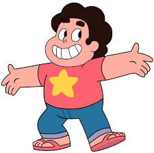
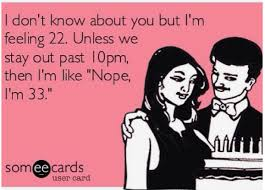
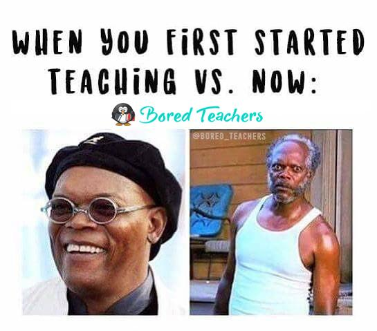
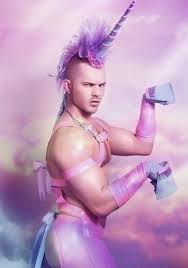

A Vacation Spot was my first attempt relying on the scaffolding of Bootstrap.
Dustin Starke

Hello and welcome. Let' get right to it; I'm excited to tell you all about me.
I'm nearing my 33rd birthday.
I generally like my birthday and often enjoy going out to sing karaoke on it.
Last year I had a dance party in my backyard. It rained. #Planning
This year? I haven't come up with a good plan. Suggestions are welcomed.

I've been an educator in the public educational sphere since 2009.
I've taught high school Spanish, English to speakers of other langugages, college prep/career readiness, and credit recovery.
Last year, I was an instructional coach and I helped other teachers with their practice.
This will be my first September that I will be going to school as a student, rather than an educator.

I really like learning to code, but I feel like I need to practice more.
After this week, I think I've learned quite a bit, however applying what I know and showing it off is quite different from rudimentary understanding.
I don't know exactly where I want to go yet with coding, but as I practice more "hands on keys, I think the habit will be stronger.
I keep reminding myself that this is day 5.

I am a Rupaul's Drag Race superfan.
I have been watching the show since I moved to Portland, when it began to air, approximately ten years ago.
My absolute favorite drag queen is Katya Zamolodchikova. Her stream of conciousness thought process is just bizarre and hits every level of humor I have.
The show is a complicated favorite and I discuss it with friends at length.